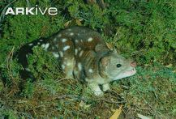

Spotted Quoll - Dasyurus Maculatus
What is a spotted quoll?
A spotted quoll, scientifically named Dasyurus Maculatus, is an Australian carnivore. Quolls look friendly, but they are very fierce. They are nocturnal, meaning they sleep through the day and hunt at night. They are the largest sized quoll. They are incredibly strong and powerful with stronger teeth. Don't let them bite you! They could take off a lot of skin.
Why are they endangered?
They are endangered because they require a specific habitat with specific food sources. They have to fight for food with other animals, such as: foxes, feral cats, domestic cats, and dogs. Other than fighting for food, deforestation is removing the food sources and homes of the spotted quoll.
Conservation
To conserve the spotted quoll, we must plant trees and stop ruining their homes. We need to stop hunting and start saving the meat for the quolls.
This website helped me with the information: